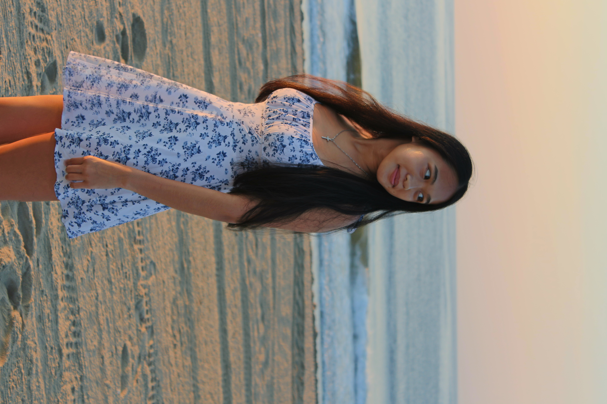

Hi! My name is Kelly, and I am the Founder and Executive Director of Behind The Mask Initiative.
So I created Behind The Mask. I wanted to create the resource I wished I had — one that introduces students to real healthcare careers, real clinical realities, and real professionals willing to share their stories. I would never want someone else to feel lost as they are trying to explore healthcare!
I am so excited to work with everyone and deepen your understanding of healthcare careers and patient care! 💙
A generation of students who enter nursing, anesthesia, pharmacy, cardiology, neurology, and medicine with early exposure to clinical stress, patient safety principles, and healthcare career pathways — empowered to make informed academic and professional decisions.
BTM is different because we go directly to the source — hosting interviews with working healthcare professionals and using their real words, experiences, and insights to give students something most healthcare-education content lacks: authenticity. You don't just read about what a dentist does, you hear it from one.